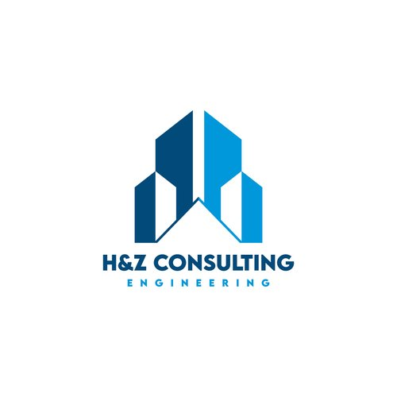

Clear Communication
Direct engineer-to-client support throughout design and construction.
About H&Z
Founded in 2021 and based in New York, H&Z serves clients across New York, New Jersey and Connecticut with design, analysis, inspection and rehabilitation support.

Who We Serve
Clients choose H&Z for 10+ years of technical expertise, responsive communication and deep understanding of local building codes. The firm delivers solutions that are practical, buildable and tailored to each project's unique needs across New York and New Jersey.
Direct engineer-to-client support throughout design and construction.
Solutions mindful of site constraints, contractor needs and code requirements.
Licensed in NY, NJ and CT, with NYC DOB Registered Special Inspection Agency status.